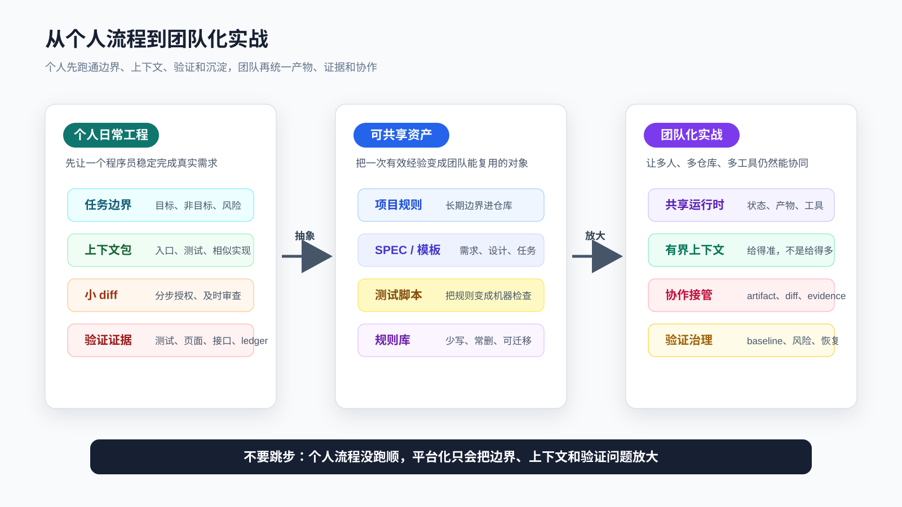

写在专栏结束时：把 AI Coding 留在日常工程里
如果一路读到这里，最重要的结论其实很简单：
AI Coding 不应该停在“我会用某个工具写代码”。
它应该变成你日常开发里的一套工程习惯。
这套习惯不依赖某个固定工具，也不靠一段神奇 prompt。它依赖的是更基础的东西：
任务开始前，先定义边界。
动手之前，先让 Agent 读对上下文。
复杂需求，先把规格写清楚。
执行过程中，用小 diff 控制风险。
完成之前，用测试、页面、接口、日志和 diff 留证据。
任务结束后，把可复用经验沉淀下来。
工具会变，模型会变，入口也会变。
但只要你还在真实代码库里交付需求，这几件事不会过时。
这也是整套内容真正想留下来的东西。
不是某个工具菜单。
不是一串命令。
不是一份可以复制粘贴的 prompt。
而是一套程序员能长期复用的 AI Coding 操作方式。

不要把结束理解成学完
AI Coding 这件事，很容易让人产生一种错觉：
我把工具都试过了。
我看懂了 Agent、Skill、MCP、OpenSpec。
我知道怎么让 AI 改代码。
所以我学完了。
这还不够。
真正的变化发生在下一次真实需求里。
比如你接到一个很普通的任务：
列表页新增一个筛选条件。
接口多返回一个状态字段。
CLI 多支持一个参数。
审批流加一个异常分支。
老模块补一条失败路径测试。
以前你可能会直接问 AI：
帮我实现这个需求。
看起来很快。
但在真实项目里，这句话通常缺了太多东西：
它不知道现有入口在哪里。
它不知道哪些行为不能改。
它不知道测试命令是什么。
它不知道这次改动的风险边界。
它不知道完成后要拿什么证明。
所以读完整套内容之后，不是要把提示词写得更长，而是要把这句话换成一套更稳的动作：
先找入口。
先看相似实现。
先确认任务边界。
先列验证动作。
先让 AI 解释准备怎么改。
再授权一个小 diff。
这才是从“会用 AI”切到“能用 AI 交付”的分界线。
你要留下四类资产
读完以后，不建议马上去搭一个很重的平台。
也不建议把每篇文章都整理成复杂模板。
先留下四类最小资产。
第一类，是项目入口卡。
它不需要长，能帮 Agent 和你自己快速进入项目就够了：
项目做什么。
主要入口在哪。
核心测试命令是什么。
本地怎么启动。
哪些目录不能随便改。
哪些接口、状态、权限、金额、数据迁移属于高风险。
这些内容适合放在项目规则文件、README 或团队已有开发文档里。
不要每次都在聊天窗口重新解释。
第二类，是任务上下文包。
它服务单次需求，不必长期保存所有细节。
最小结构可以是：
目标：这次要改变什么用户可见行为。
非目标：这次明确不改什么。
相关文件：入口、调用方、测试、文档。
约束：兼容性、权限、数据、副作用。
验证：完成后要跑什么、看什么。
未知：哪些信息需要先确认，不能让 AI 猜。
这份上下文包的价值，不是写得漂亮。
它的价值是防止 AI 一边改一边补脑。
第三类，是验证记录。
这类记录可以很短，但必须具体：
命令是什么。
结果是什么。
失败是否是改前已有。
页面或接口看到了什么。
哪些路径还没覆盖。
剩余风险是什么。
真实交付里，最危险的不是 AI 写错代码。
最危险的是你不知道它错在哪里，还被一段完成总结说服了。
验证记录就是反制这个问题的。
第四类，是个人规则库。
不要把所有经验都写进去。
只写会反复发生、反复提醒、反复影响结果的东西。
例如：
接口合同改动必须看调用方。
CLI 行为改动必须覆盖 stdout、stderr、exit code。
前端交互改动必须有浏览器验证。
测试失败不能直接听 AI 说无关，要先看 baseline。
多 Agent 只拆独立任务，不拆强依赖实现。
这些规则以后可以继续升级成 Skill、脚本、测试或检查项。
但一开始，不要追求完整。
能在下一次任务里生效，比写成一套宏大的文档更重要。
把一套文章压成一条日常流程
这套内容看起来覆盖了很多主题：
工具工作台。
上下文工程。
代码地图。
项目规则。
任务上下文包。
SDD 和 OpenSpec。
计划先行。
小步开发。
TDD。
系统化调试。
验证闭环。
Skill。
MCP。
多 Agent。
个人规则库。
但落到每天的开发，不需要每次都跑满。
你可以把它压缩成一条普通流程：
判断任务风险。
准备上下文。
让 AI 侦察代码。
要求 AI 给计划。
按小步授权修改。
看 diff。
跑验证。
记录证据和剩余风险。
沉淀一条可复用经验。
低风险任务可以轻一点。
例如改一段 README、修一个 typo、补一条简单文案，只需要明确目标、看 diff、检查链接或命令。
中风险任务要多做几步。
例如改 CLI 行为、补接口字段、调整表单校验，就要看调用方、补测试、跑目标命令、同步文档。
高风险任务必须拉满。
例如权限、金额、库存、状态机、数据迁移、兼容接口、批量任务、生产副作用，就不能只靠聊天窗口推进。至少要有规格、设计边界、任务拆分、失败用例、回滚考虑和完成证据。
很多人用 AI Coding 不稳定，不是因为少了某个工具。
而是低风险任务和高风险任务用了同一套粗糙流程。
轻任务被搞复杂，重任务被处理得太轻。
程序员要做的判断，就在这里。
最容易带走的不是 prompt，而是停止条件
很多人会问：
有没有一段最终版 prompt？
没有。
至少不应该把它当成核心资产。
不同项目、不同任务、不同风险级别，prompt 一定要变。
真正更值得带走的是停止条件。
比如任务开始前的停止条件：
AI 没说清相关文件，不实现。
AI 没说清验证方式，不实现。
AI 把非目标也纳入计划，不实现。
任务里有业务歧义，先确认，不让 AI 猜。
执行中的停止条件：
diff 变大，先停。
新增依赖，先问为什么。
越过授权目录，先停。
测试失败原因不清楚，先复现和分类。
实现开始改公共抽象，先回到设计。
完成前的停止条件：
没有新鲜验证输出，不说完成。
只跑了单测但改了 UI，不说完成。
只看页面但改了接口合同，不说完成。
没有说明剩余风险，不说全部完成。
AI 只给总结，没有证据，不接受。
这些停止条件比 prompt 更硬。
prompt 是给 AI 的。
停止条件是给人的。
AI Coding 能不能稳定，很大程度取决于程序员能不能在这些节点停下来。
以后工具升级，按这个顺序
工具会继续变多。
你还会看到新的 Agent、新的 IDE 插件、新的模型、新的 MCP server、新的 Skill 形态、新的自动化平台。
不要一看到新东西就搬进工作流。
更稳的顺序是：
先把任务上下文写清楚。
再把项目规则放到仓库里。
再把测试和验证记录做起来。
再用 SDD / OpenSpec 管复杂需求。
再用 Skill 固化高频流程。
再用只读工具降低上下文成本。
再考虑 MCP 接入外部资源。
最后才考虑多 Agent 和自动化。
这个顺序不是为了保守。
它是为了让每一步升级都能解决真实问题。
如果任务上下文还不清楚，MCP 接更多资料只会把噪音变多。
如果验证习惯还没有建立，多 Agent 只会并行产生更多难审的输出。
如果项目规则还在聊天窗口里来回复制，Skill 也只是换个地方存 prompt。
如果测试和手动验证不稳定，OpenSpec 也只能停留在文档层面。
工具升级应该服务已有流程，而不是替代工程判断。
适合从哪里开始
不要从空项目开始。
空项目太干净，反而看不出 AI Coding 的真实问题。
选一个你熟悉但不完美的项目。
最好有这些特征：
有真实业务逻辑。
有一些测试，但覆盖不完整。
有 README，但命令可能过期。
有旧模块，也有近期改动。
有一两个你一直想修的小问题。
然后选一个中等大小的任务。
不要太小，小到看不出流程价值。
也不要太大，大到一开始就要跨很多模块。
合适的任务像这样：
给一个 CLI 命令补错误提示。
给列表页新增一个状态筛选。
给接口补一个向后兼容字段。
把一段重复校验抽成内部函数。
给老模块补一条失败路径测试。
修一个能稳定复现的小 bug。
用下面这份最小任务卡开始：
目标：
这次要改变的用户可见行为是什么？
非目标：
哪些文件、行为、抽象这次不碰？
上下文：
让 AI 先读哪些入口、测试、文档和相似实现？
计划：
AI 准备改哪些文件，为什么？
授权：
第一步只允许改什么？
验证：
改完必须跑什么命令、看什么页面或接口？
沉淀：
这次如果踩坑，哪一条经验值得写回规则？
这张卡足够短。
短到你愿意在真实任务里用。
也足够硬。
硬到 AI 很难完全脱离工程事实乱改。
团队里也可以这么用
这套方法不是只能个人使用。
团队里更适合从轻量约定开始，而不是直接搭平台。
比如先约定三件事：
涉及外部行为变化的 AI 代码，PR 里必须写验证证据。
AI 参与的复杂需求，必须先有任务上下文或规格。
项目规则只能写长期有效内容，临时结论不能塞进规则文件。
再约定三类文件：
项目规则文件：长期有效的工程约束。
任务上下文：单次需求的目标、范围和验证。
验证记录：本次改动跑过什么、没覆盖什么。
这样做不会强迫所有人使用同一个 AI 工具。
有人用 Codex，有人用 Claude Code，有人用 Cursor，有人用 Copilot，都可以。
团队真正需要统一的，不是工具界面。
而是证据和边界：
为什么这么改。
改了哪些范围。
怎么证明没破坏关键行为。
还有哪些风险没覆盖。
这几件事统一了，工具可以各用各的。
如果你要把这套方法带进团队
个人 AI Coding 稳定以后，下一步自然会遇到团队问题。
个人可以靠经验记住很多边界。
团队不行。
一旦多人、多仓库、多应用、多工具一起使用 AI Coding，问题会变成另一组：
不同项目是不是在重复建设 Agent、Prompt、Skill 和规则？
需求、上下文、验证记录有没有统一承接方式？
AI 生成的产物怎么被团队 review、接管和恢复？
测试失败、baseline、剩余风险有没有团队共识？
个人沉淀的规则怎样变成团队可复用资产？
这些问题已经超出了个人工作流。
它们需要团队层面的共享运行时、SPEC 系统、需求拆分、有界上下文、交付协作、验证治理和资产沉淀。
如果你正在把 AI Coding 从个人实践带到团队，可以继续看《AI Coding 团队化实战》。
那套内容讨论的不是“团队成员怎么写更好的 prompt”，而是：
怎样把个人 AI Coding 经验，
变成团队可复制、可审查、可恢复、可沉淀的工程能力。
个人专栏解决的是：
一个程序员怎样稳定用 AI 完成真实代码库里的需求。
团队化实战继续解决的是：
一支团队怎样让这些经验不只停留在少数高手身上。
这两个问题前后衔接，但不要跳步。
如果个人任务边界、上下文、验证和规则沉淀还没跑顺，直接做团队平台，很容易把个人阶段的问题放大。
更合适的顺序是：
先让个人流程稳定。
再把高频规则抽出来。
再统一团队产物和证据。
再建设共享运行时和工具适配。
最后再考虑多 Agent、自动化和平台化治理。
这样团队化不是新起一套口号，而是把已经有效的工程习惯放大。
几个不要做的事
第一，不要把所有规则塞进一个超长 prompt。
规则一长，冲突、过期和被忽略都会变多。
长期规则放项目。
单次规则放任务。
流程规则放 Skill。
可执行规则放测试和脚本。
第二，不要为了显得专业而每次都上 OpenSpec。
小改动不需要完整规格。
但一旦涉及状态、权限、金额、兼容性、跨模块调用，就不要只靠一句话让 AI 猜。
第三，不要把 AI 的完成总结当成交付证据。
总结可以读，但不能替代命令输出、diff、截图、接口响应、测试结果和 review。
第四，不要把个人规则库写成垃圾桶。
规则越多，越没人看。
只留下能改变下一次行为的规则。
第五，不要把多 Agent 当成默认答案。
多 Agent 适合并行侦察、独立 review、独立实现小任务。
它不适合边界不清、强依赖、需要大量共享状态的任务。
常见问题
我是不是要把前面的文章都重新整理成模板？
不需要。
先抽一套能跑起来的最小流程。真实用三次以后，再决定哪些东西值得模板化。没被真实任务验证过的模板，很容易变成摆设。
我所在团队暂时不能使用外部 AI 工具怎么办？
仍然可以迁移工程方法。任务上下文、规格、测试、验证记录、规则沉淀，本来就是程序员应该做的事。AI 只是放大这些方法的收益，不是这些方法存在的前提。
每次都写验证记录会不会太重？
取决于任务风险。文案改动可以只记录 diff 和链接；接口、CLI、状态机、权限、数据类改动就应该记录命令和结果。验证记录不要求长，只要求可复查。
规则库越来越多怎么办？
删。
删掉过期规则、临时规则、重复规则、无法改变行为的规则。能用测试表达的，就不要长期写自然语言提醒。能用脚本检查的，就不要靠人记。
工具一直变，前面学的会不会失效？
具体入口会变，工程控制点不会变。读文件、选上下文、限制 diff、写测试、跑验证、审查风险、沉淀规则，这些动作仍然存在。工具升级以后，先看它能不能更好地服务这些控制点。
最后回到一句话
AI Coding 的长期价值，不是让你少写几行代码。
而是让你把开发过程里那些原本靠经验、靠记忆、靠临场判断的东西，逐步变成可复查、可复用、可迁移的工程资产。
一次任务开始前，多一份上下文。
一次改动执行中，多一次 diff 边界。
一次完成之前，多一条验证证据。
一次交付之后，多一条可复用规则。
这些东西看起来都不大。
但它们会累积。
累积到某一天，你会发现自己使用 AI 的方式已经变了：
不再急着让 AI 写代码。
先让它理解项目。
不再接受漂亮总结。
先看证据。
不再把错误归因给模型不稳定。
先检查边界、上下文和验证。
不再追一个万能工具。
开始维护自己的工程系统。
这时，AI Coding 才真正进入日常工程。
它不再是一段演示。
也不再是一种新鲜感。
它变成你处理真实需求、真实代码、真实风险的一部分。
这比学会任何一个工具都重要。